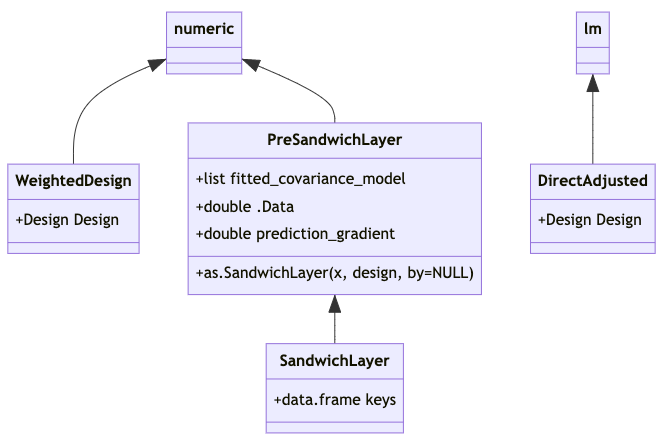

Data structures to support standard error calculations for direct adjustment assisted by a prior covariance model
Ben Hansen
April 2022 (+ non-substantive updates in May ’22)
Source:vignettes/sandwich_infrastructure.Rmd
sandwich_infrastructure.RmdContext
The user has specified a comparative study design and separately fitted a covariance model. E.g.:
des <- obs_design(treat ~ strata(district) + cluster(school, classroom),
data =Q_)
cmod <- glm(promotion ~ pretest + gender,
family=binomial(), data = C)The data frames C and Q_ describe the covariance and quasiexperimental samples, potentially at different levels of aggregation. For instance C might give student data while Q_ is a table of classrooms. The samples they describe may be disjoint, identical or overlapping.
Next she uses lm() (or perhaps an lm()-wrapper we’ll offer) to calculate directly adjusted1 estimates of an intention-to-treat effect:
m <- lm(promotion ~ treat * gender, data = Q,
offset = cov_adj(cmod),
weights = ate(des))
coef(m) # spits out effect estimateswhere Q may be the same as Q_, or Q_ may describe aggregates of units described in Q; the offset is similar to what predict(cmod, newdata=Q, type="response") would have given; and the weights are of the Horwitz-Thompson, inverse probability of assignment type.
At this point m has class lm, but with additional information tucked away in m[['model']]: this data frame will have special columns (weights) and offset(cov_adj(cmod)). As of this writing, the flexida package implements an S4 class WeightedDesign that extends the base numeric vector type and encodes information beyond unit weights necessary for standard error calculations, and arranges that m[['model']][['(weights)']] is of this type. This note describes two planned classes appropriate for m[['model']][['offset(cov_adj(cmod))']]: SandwichLayer, and a fallback option PreSandwichLayer, for use when the call to cov_adj() producing this object is able to locate some but not all of the necessary information.
Standard errors will be obtained through subsequent steps, e.g.
or
m <- as.DirectAdjusted(m,
by=list(cmod=c(cid1=altcid1, cid2=altcid2))
)
vcov(m)with “cid1” and “cid2” the column names of clusters(des), while altcid1 and altcid2 corresponding column names of C, or
m <- as.DirectAdjusted(m,
by=keys_data_frame)
vcov(m)where keys_data_frame has rows aligned with those of C and columns including “cid1” and “cid2.”
Either way, once m has been coerced to class DirectAdjusted, it has acquired a @Design slot for the information in des, while m[['model']] will have a column offset(cov_adj(cmod)) of class SandwichLayer. Together these objects will contain the necessary additional information to perform standard error calculations that:
- attend to the structure of the design, as recorded in
des; and - propagate errors from the fitting of covariance model
cmodinto standard errors reported fortreat * gendercoefficients.
Formal class structure proposal

Like the existing class WeightedDesign, the PreSandwichLayer and SandwichLayer classes extend the base numeric vector type, with numeric vectors (of predictions) in their @.Data slots. PreSandwichLayer and SandwichLayer also have a @prediction_gradient slot, for a numeric matrix of dimension
c(nrow(@.Data), length(coef(fitted_covariance_model)))Regarding as.SandwichLayer(): Turning a PreSandwichLayer, x, into a SandwichLayer amounts to providing a mapping from the rows of model.matrix(x) or sandwich::estfun(x) to units of assignment recorded in des. This mapping is to be recorded the @keys data frame, with as many rows as model.matrix(x) and as many columns as there are unit-of-assignment (clustering) variables in a corresponding Design.
The mapping can be effected via expand.model.frame(x, vars, <...>). If by=NULL, then vars is the vector of names of unit-of-assignment variables given in the design, desvars say. Otherwise by is a named character vector giving a crosswalk, the second argument to expand.model.frame() should be by[desvars], and those names should be switched out of column names inthe data frame expand.model.frame() returns in favor of desvars.
In order for vcov.DirectAdjusted(m) to work, the following functions must have methods applicable to m@fitted_covariance_model: model.matrix(), sandwich::estfun(), sandwich::bread(). These are similar requirements to those of sandwich::vcovHC().
Basis in known extensions of Huber-White setup to chained estimators
With reference to the formulas for stacked estimating equations of Carroll, Ruppert, Stefanski and Crainiceanu (2006, p.373), the covariance model has psi functions (estimating equations) \(\phi(\tilde{\mathbf{Y}}, \alpha)\) with parameters \(\alpha\), and Fisher information and estimating-equation covariance matrices \(A_{11}\) and \(B_{11}\) respectively; while the direct adjustment model’s are \(\psi(\tilde{\mathbf{Y}}, \tau, \alpha)\), the treat coefficients being \(\tau\), with sandwich components \(A_{22}\) and \(B_{22}\). (The symbols “\(\phi()\),” “\(\psi()\)” and “\(\alpha\)” are used as Carroll et al use them, while our “\(\tau\)” corresponds to their “\(\mathcal{B}\).”)
We take \(i\) to range over the units of assignment (clusters) not elements2. The Carroll et al development is missing \(n^{-1}\) factors at the right of the equations defining \(A_{n,\, 11}, \ldots, B_{n,\, 22}\). To avoid ambiguities in mapping to external subroutines’ understanding of “\(n\)”3, let’s address the error by leaving those displays as-is, while striking the leading \(n^{-1}\) factors from display (A.34) and from the subsequent expression for \(\mathrm{var}(\hat{\mathcal{B}})\): i.e., turn the A and B matrices into sums not means. Carroll et al’s formulas for \(A_{11}\), \(A_{21}\) and \(A_{22}\) then apply, although design-based standard errors call for different calculations of \(B_{11}\), \(B_{12}\) and \(B_{22}\). (When we get around to putting the multidecker sandwich together, we’ll need to be cognizant of the fact that its As and Bs are means not sums, and ready to compensate for the fact that it will have divided by different \(ns\) in figuring the means that are \(A_{11}\) and \(A_{22}\), for example.) Denote the clusters/units of assignment that are represented in covariance and quasiexperimental samples by \(\mathcal{C}\) and \(\mathcal{Q}\) respectively.
Required materials for SE calculations
To estimate variances and covariances of \(\tau\), we’ll need to assemble the following materials.
- Sufficient information about \(\mathcal{C}\) and \(\mathcal{Q}\) to identify their intersection \(\mathcal{C}\cap\mathcal{Q}\), as is needed to estimate \(B_{21}\);
- Matrices of estimating functions \(\{\phi(\tilde{\mathbf{Y}}_i; \hat{\alpha}): i \in \mathcal{C}\cap\mathcal{Q}\}\) and \(\{\psi(\tilde{\mathbf{Y}}_i, \hat{\tau}, \hat{\alpha}): i \in \mathcal{C}\cap\mathcal{Q}\}\), as are needed for \(B_{21}\);
- For the quasiexperimental sample \(\mathcal{Q}\), matrices \[\nabla_{\alpha} \{\sum_{j \in i}\psi(\tilde{\mathbf{Y}}_j, \hat{\tau}, {\alpha}): i \in \mathcal{Q}\} \vert_{\alpha=\hat\alpha},\] corresponding to \(A_{21}\), where “\(j \in i\)” means “elements \(j\) of cluster \(i\)” and “\(\sum_{j \in i} \psi(\tilde{\mathbf{Y}}_j, \hat{\tau}, {\alpha})\)” is interpreted to mean “\(\psi(\tilde{\mathbf{Y}}_i, \hat{\tau}, {\alpha})\)” if there is no clustering;
- Estimates of the direct adjustment model’s “bread matrix” \((n_\mathcal{Q}^{-1} A_{22})^{-1} = \{\frac{1}{\# \mathcal{Q}}\nabla_\tau \sum_{i \in \mathcal{Q}} \mathbb{E}[\psi(\tilde{\mathbf{Y}}_i, \tau, \hat{\alpha})] \vert_{\tau=\hat\tau}\}^{-1}\), i.e. the inverse of its Fisher information w.r.t. \(\tau\) only, along with the “meat matrix” \(n_\mathcal{Q}^{-1} B_{22} = n_\mathcal{Q}^{-1} \mathrm{Cov}[\sum_{i \in \mathcal{Q}} \psi(\tilde{\mathbf{Y}}_i, {\tau}, {\alpha})]_{({\tau}, {\alpha})=(\hat{\tau}, \hat{\alpha})}\);
- The covariance model’s bread matrix \((n_\mathcal{C}^{-1} \hat{A}_{11})^{-1} = \{n_\mathcal{C}^{-1}\sum_{i \in \mathcal{C}} \nabla_\alpha [\phi(\tilde{\mathbf{Y}}_i; {\alpha})]_{\alpha=\hat\alpha}\}^{-1}\); and
- for covariance estimation in the conventional “model-based” setup only, estimates of the covariance model’s B matrix \(n_\mathcal{C}^{-1}B_{11} = n_\mathcal{C}^{-1} \mathrm{Cov}[\sum_{i \in \mathcal{C}}\phi(\tilde{\mathbf{Y}}_i; {\alpha})]_{\alpha=\hat\alpha}\) (a “clustered” covariance estimate).
In (5), observed information \(n_\mathcal{C}^{-1}\sum_{i \in \mathcal{C}} \nabla_\alpha [\phi(\tilde{\mathbf{Y}}_i; {\alpha})]_{\alpha=\hat\alpha}\) is preferred to “observed expected” information, \(n_\mathcal{C}^{-1}\sum_{i \in \mathcal{C}} \nabla_\alpha \mathbb{E} [\phi(\tilde{\mathbf{Y}}_i; {\alpha})]_{\alpha=\hat\alpha}\), because observed information is agnostic as to whether expectation is calculated with conditioning on potential outcomes, ie the finite population perspective, or with conditioning on treatment assignment, the model based perspective. In the special case of quantile regression4, observed information isn’t ordinarily used in standard error calculations, and it may take some doing to get.
Regarding (6), \(B_{11}\) is not needed for design-based standard errors, as in this setting observations outside of the quasiexperimental sample do not contribute to the covariance model’s B matrix. Only quasiexperimental sample observations do, and we’ll have access to these when the direct adjustment model is fit. As we also have \(\{\phi(\tilde{\mathbf{Y}}_i; \hat{\alpha}): i \in \mathcal{Q}\}\) and \(\{\psi(\tilde{\mathbf{Y}}_i, \hat{\tau}, \hat{\alpha}): i \in \mathcal{Q}\}\), we can use these materials to estimate \(B_{12}\) and \(B_{22}\).
Software implementation comments on 1–6 above, including contents of {Sandwich/Vegan}{Layer/LayerKit} objects
1. A SandwichLayer object s_l_o carries a keys data frame with which to identify rows of model.matrix(s_l_o) with units of assignment (as named in a separate Design object). The association can be many-one (but not one-many); it is not required that named units appear in the design. As covmod itself won’t be aware of these cluster associations, assembling this info at runtime calls for trickery, as well as a means for users to override the trickery and directly provide key variables that the design will need. An NA in keys indicates a unit not appearing in the Design.
2. Estimating functions may need to be aggregated (summed) to the cluster level before calculation of \(B_{21}\). There should be a dedicated function to calculate \(B_{21}\) from the cluster-aggregated estimating function matrices.
3. PreSandwichLayer and SandwichLayer have an @prediction_gradient slot for a numeric matrix. This matrix has as many rows as there are entries in the .Data vector, and as many columns as there are estimating equations.
The @prediction_gradient slot carries \(\{\nabla_\alpha f_{\alpha}(\tilde{\mathbf{Y}}_j)|_\alpha=\hat\alpha\}\), where \(j\) ranges over rows of Q as above – elements not clusters where the distinction exists – and \(f_\alpha(\mathbf{Y})\) represents the prediction for data \(\mathbf{Y}\) from a fitted model of class(cov_mod) with parameters \(\alpha\). For \(\psi()\)’s that use only “predictions” of the covariance model, as ours does, the first derivative of the covariance model predictions as applied to data in \(\mathcal{Q}\) will provide sufficient information from the covariance model to complete the calculation of \(\{\nabla_{\alpha} \psi(\tilde{\mathbf{Y}}_i, \hat{\tau}, {\alpha}) \vert_{\alpha=\hat\alpha}: i \in \mathcal{Q}\}\).
For glm and similarly typed objects cmod, such predictions are a joint function of family(cmod) and the model.matrix generated in the process of creating predictions from cmod.
4. The SandwichLayer class isn’t implicated in (4). We can take extant calculations of a direct adjustment model’s information matrix, with the proviso that we keep track of whatever scaling those calculations may have applied. For design-based SEs we’ll need our own B matrix calculation. For model-based SEs we can plug in to extant routines for \(B_{22}\) also, but being careful ensure clustering on the units of assignment (as named in a Design object). Scaling of these matrices should default to the conventions of the sandwich package. (I haven’t considered whether use of HC0–3 etc for \(B_{22}\) calls for corresponding adjustment to estimation of \(B_{21}\) and/or \(B_{11}\), nor whether heuristics animating these adjustments make sense in this context.)
5. sandwich::bread() will be used to retrieve \(A_{11}^{-1}\).
We can take extant calculations of a covariance model’s information matrix, defaulting to scaling conventions implemented in the sandwich package.
6. sandwich::meatCL() will be used to retrieve \(B_{11}\). For now we only try to implement HC0 & HC1. (I haven’t considered whether use of HC0–3 etc for \(B_{11}\) calls for corresponding adjustment to estimation of \(B_{21}\) and/or \(B_{22}\), nor whether heuristics animating these adjustments make sense in this context.)